hatchery
아이디어에서 수요 판정까지, 한 흐름으로
/diverge→/newapp→킥오프→review→/versionup무인 개발맥락 리뷰테스트 약화 차단 훅
6개 앱 착수GitHub 공개 예정
From One Line to an App
사람은 방향과 판정을 정하고,
짓기·검증·배포 준비는 에이전트가 합니다.
Idea · Build · Verify · Launch
에이전트가 짓고 검증하고, 사람은 금빛 지점에서 정합니다.
intake커뮤니티 불평에서 아픔 발굴·심사
/diverge한 줄 아이디어 → 5개 관점 검토
/newapp브리프·가드·저장소 자동 생성
킥오프목표 한 장으로 에이전트가 구현·검증
review독립 세션 2개가 변경분 검토
/versionup계속·전환·출시·중단 판정
orbit빌드·업로드·기록 자동화
“사람은 방향과 판정을 정하고, 짓기·검증·배포 준비는 에이전트가 합니다.”
앱을 짓고, 내보내고, 알리는 데 쓰는 도구를 분류별로 모았습니다.
아이디어에서 수요 판정까지, 한 흐름으로
/diverge→/newapp→킥오프→review→/versionup만들고 싶은 게임을 말하면, 기획서부터 실행되는 게임까지
/game-plan→/game-review→/game-generate→/game-qa→/game-polish스토어 테스트 트랙까지, 배포 자동화
빌드→업로드→기록Superwork가 만든 앱들입니다. 옆으로 넘겨 보고, 카드에 마우스를 올리면 커지고, 누르면 자세히 볼 수 있어요.
짧게 즐기고 오래 남는 게임들
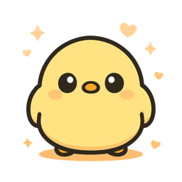
동글동글 귀여운 친구들이 뭉칠수록 커지는 말랑말랑 힐링 캐주얼 게임.
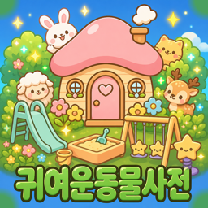
깜찍한 동물들을 하나씩 모아 나만의 도감을 채워가는 힐링 컬렉션.
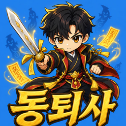
골목골목 출몰하는 악귀를 물리치는 통쾌한 한국형 퇴마 액션 RPG.
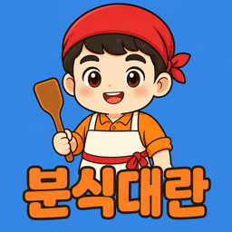
밀려드는 주문을 퍼즐로 척척! 손맛 터지는 분식집 운영 게임.
한 손으로 즐기는 뱀서류 액션! 코인으로 캐릭터를 강화하며 더 높이 올라가세요.
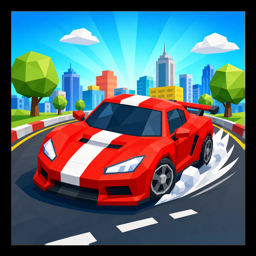
달리고, 피하고, 추월하라! 생동감 넘치는 3D 도시를 질주하는 드라이빙 게임.
칠흑 같은 미로 속, 손전등 하나와 발소리에 의지해 보이지 않는 추격자를 피해 탈출하라.
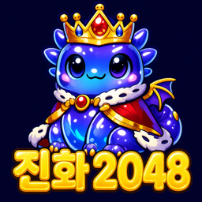
숫자를 합칠수록 귀여운 젤리 몬스터가 알에서 용왕까지 진화하는 2048 퍼즐!
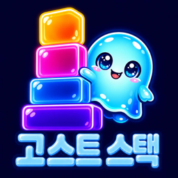
숨은 고수(고스트)와 겨루는 네온 야경 블록 쌓기! 탭 한 번으로 즐기는 하이퍼 캐주얼.
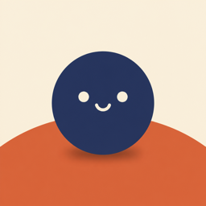
오므리면 작아지고, 벌리면 커진다! 두 손가락 핀치 하나로 즐기는 한 끗 차이 엔드리스 러너.
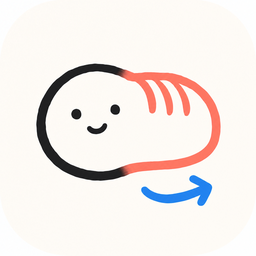
고양이로 시작한 그림이 5명을 거쳐 탕수육이 되어 돌아옵니다. 못 그릴수록 재밌는 그림 릴레이.
일상에 AI를 더한 서비스
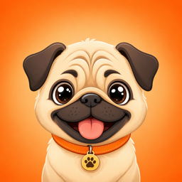
동네 강아지 친구들과 함께 걷는 산책 모임, 반려인을 위한 커뮤니티.
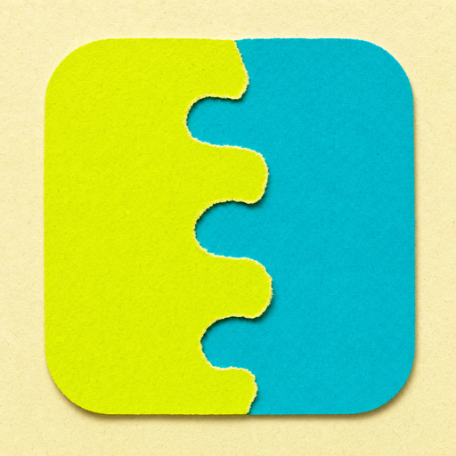
내 학교와 학과를 걸고 다른 학교와 겨루는 소속 대항 미니게임. 한 판 20초 안팎, 게임 20종.
집에 있는 물건의 사용기한을 사진 한 장으로 관리하는 살림 비서. AI가 품목·기한을 자동 인식해요.
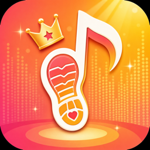
매일 걷는 걸음이 최애 가수를 향한 응원이 됩니다. 걸음으로 모은 투표권으로 응원하세요.
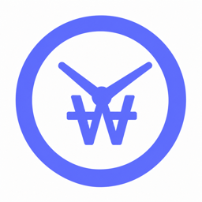
그때 그 가격, 지금은 얼마? 시점별 물가를 한눈에 비교하는 타임머신.
못 그려도 괜찮아! 사진 한 장이면 피식 웃기는 낙서풍 그림으로 뚝딱.
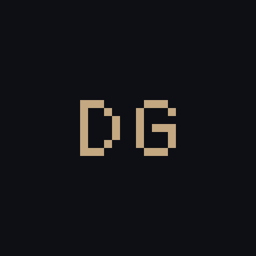
당신이 꾼 꿈을 AI가 한 장의 일러스트로. 꿈을 그림으로 모으는 갤러리.
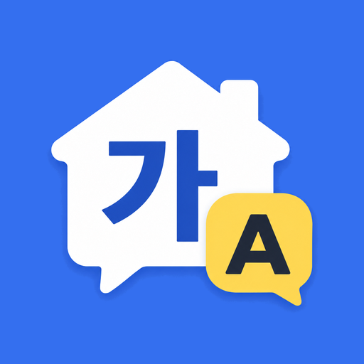
학교 가정통신문을 준비물·회신·금액 쪽지로 정리해 베트남어·중국어·러시아어·일본어로 번역해 드리는 학부모 앱입니다. 다문화 가정도 할 일과 기한을 모국어로 확인할 수 있어요.
수능 끝나고 수험표로 받는 할인을 지도에서 찾아요. 카페·외식·영화·놀이공원·항공·휴대폰 할인과 내 주변 매장을 한 번에.
필요할 때 바로 꺼내 쓰는 도구
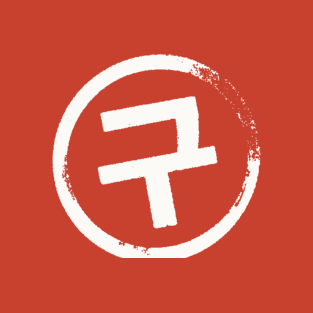
카드·간편결제 앱의 결제 알림에서 정기결제를 찾아 결제 전에 알려 드리는 Android 앱입니다. 결제 알림은 기기 안에서만 읽습니다.
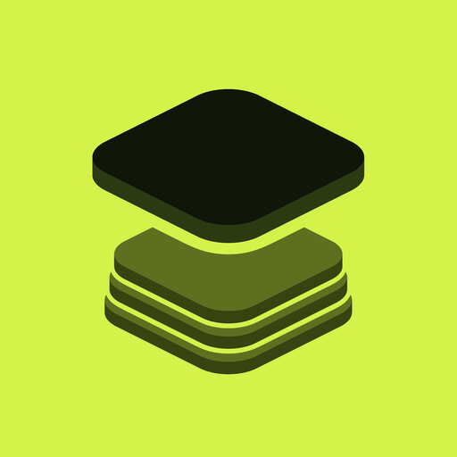
지울 사진을 고르는 대신 남길 사진을 먼저 정하는 사진 정리 앱.
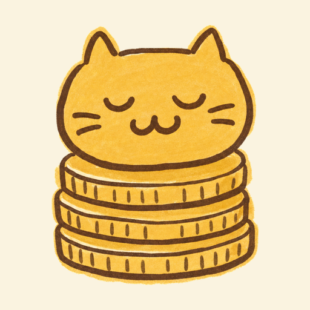
출퇴근 버튼 하나로 야간·연장·휴일·주휴수당까지 계산해 홈 화면 위젯에 보여주는 근무 기록 앱.
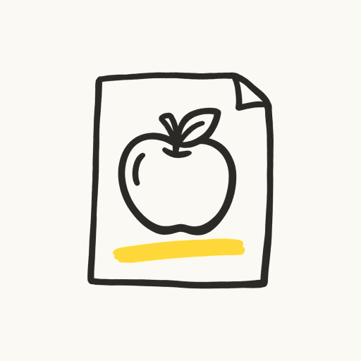
영단어를 낙서로 기억하고, 내가 그린 그림으로 복습하는 학습 앱.
사진 용량을 정한 KB 이하로 줄이고 JPG·PNG·WebP 변환, 크기 조절, 여러 장을 A4 PDF로 묶는 무료 도구. 파일을 서버에 올리지 않고 기기 안에서 처리합니다.
문제의 밑바닥까지 파고들어, AI 에이전트 워크플로로 가장 효율적인 해답을 찾습니다.
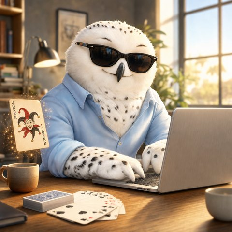
sungForward Deployed Engineer · PM“당연한 것에 질문을 던지고, 문제를 재정의하며, 실질적인 해결책을 설계합니다.”
“문제를 재정의하고, 스스로 개선하는 시스템을 설계합니다.”
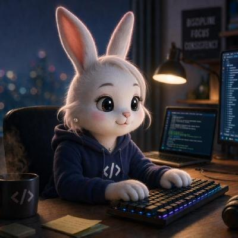
susuAI Creative Engineer“AI가 창작하도록 도구를 쥐여주고, 그 도구로 직접 만듭니다.”
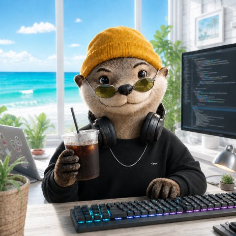
inotterwordsDevOps Engineer“흐름을 잇고, 스스로 지속되게 합니다.”
“우리는 문제의 밑바닥까지 깊게 파고들어(Question & Re-define), AI 에이전트 워크플로우를 통해 가장 효율적인 방식으로 비즈니스 해답을 찾아냅니다.”
기획부터 배포까지, 끊김 없는(Seamless) AI 네이티브 환경을 구축하는 것이 우리의 목표입니다.
팀 소개 자세히 보기 →